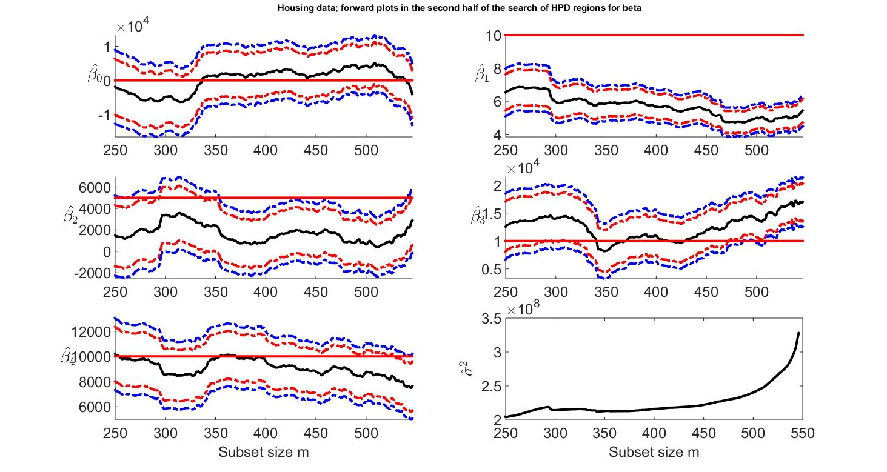

| Flexible Statistics Data Analysis Toolbox™ |
|
Bayesian minimum deletion residual
[out]
= FSRBeda(y, X)
[out] = FSRBeda(y, X, param1,
val1, param2,
val2,...)
[out] = FSRBeda(y, X)
enables to monitor several quantities in each step of the Bayesian search.
| Parameter | Value |
|---|---|
| 'y' | A vector with n elements that contains the response variables. Missing values (NaN's) and infinite values (Inf's) are allowed, since observations (rows) with missing or infinite values will automatically beexcluded from the computations. |
| 'X' | Data matrix of explanatory variables (also called 'regressors') of dimension (n x p-1). Rows of X represent observations, and columns represent variables. Missing values (NaN's) and infinite values (Inf's) are allowed, since observations (rows) with missing or infinite values will automatically be excluded from the computations. |
| PRIOR INFORMATION: β is assumed to have a normal distribution with mean β and (conditional on τ) covariance (1/τ0) (X0'X0)-1 β~N(β0, (1/τ0) (X0'X0)-1) The prior distribution of τ0 is a γ distribution with parameters a and b, that is p(τ0) ∝ τa0-1 Exp(-b0, τ) and E(τ0)= a0/b0 |
Remark: The user should only give the input arguments that have to change their default value. The name of the input arguments needs to be followed by their value. The order of the input arguments is of no importance. Missing values (NaN's) and infinite values (Inf's) are allowed, since observations (rows) with missing or infinite values will automatically be excluded from the computations. y can be both a row of column vector.
[out]=FSRBeda(y, X) returns the following information
mdr: (n-init)-by-3 matrix which contains
the monitoring of Bayesian minimum deletion residual or (m+1)ordered
residual at each step of the forward search.
1st col = fwd search index (from init to n-1)
2nd col = minimum deletion residual
3rd col = (m+1)-ordered residual
Remark: these quantities are stored with sign, that is the min deletion
residual is stored with negative sign if it corresponds to a negative
residual.
msr: (n-init)-by-3 matrix which
contains the monitoring of Bayesian minimum deletion residual or
(m+1)ordered residual at each step of the forward search.
1st col = fwd search index (from init to n-1)
2nd col = minimum deletion residual
3rd col = (m+1)-ordered residual
Remark: these quantities are stored with sign, that is the min deletion
residual is stored with negative sign if it corresponds to a negative
residual
Bols: (n-init+1)-by-(p+1) matrix
containing the monitoring of posterior mean (conditional on τ0)
of
β (regression coefficents) β1 = (cR + X'X)-1
(cRβ0+X'y)
|
Note FSRBeda is an enhanced version of function FSRBmdr with a set of flexible options and an articulate output. |
[out] = FSRBeda(y,X,param1,val1,param2,val2,...) specifies one or more of the name/value pairs described in the following table.
| Parameter | Value |
|---|---|
| 'intercept' |
If 1, a model with constant term will be fitted (default) else no constant term will be included. |
| 'bayes' | a structure which specifies prior information Strucure bayes contains the following fields beta0: p-times-1 vector containing prior mean of β R p-x-p positive definite matrix which can be interepreted as X0'X0 where X0 is a n0 x p matrix coming from previous experiments (assuming that the intercept is included in the model) The prior distribution of τ0 is a γ distribution with parameters a and b, that is p(τ0) ∝ τa0-1 Exp(-b0, τ) and E(τ0)= a0/b0 tau0: scalar. Prior estimate of τ=1/ σ2 =a0/b0 n0 : scalar. Sometimes it helps to think of the prior information as coming from n0 previous experiments. Therefore we assume that matrix X0 (which defines R), was made up of n0 observations. |
|
REMARK: if structure bayes is not supplied the default values
which are used are: beta0=zeros(p,1)vector of zeros R =eye(p)Identity matrix tau0=1/1e+6; Very large value for the prior variance, that is a very small value for τ0 n0=1; just one prior observation |
|
| 'bsb' | m x 1 vector containing vector containing the list of units forming the initial subset, if bsb=0 then the procedure starts with p units randomly chosen else if bsb is not 0 the search will start with m0=length(bsb). The default value of bsb is '' that is in the first step just prior information is used. |
| 'init' |
scalar, which specifies the point where to initialize the search and start monitoring required diagnostics. Notice that if bsb is supplied init>=length(bsb). if init is not specified it will be set equal to p+1, if the sample size is smaller than 40; min(3*p+1,floor(0.5*(n+p+1))), otherwise. |
| 'nocheck' |
Scalar. If nocheck is equal to 1 no check is performed on matrix y and matrix X. Notice that y and X are left unchanged. In other words the additional column of ones for the intercept is not added. As default nocheck=0. |
| 'conflev' | vector which contains the confidence levels to be used to compute HPDI. This input option is used just if input stats=1. The default value of conflev is [0.95 0.99] that is 95% and 99% HPDI confidence intervals are computed. |
|
REMARK: The user should only give the input arguments
that have to change their default value. The name of the input
arguments needs to be followed by their value. The order of the input
arguments is of no importance. Missing values (NaN's) and infinite values (Inf's) are allowed, since observations (rows) with missing or infinite values will automatically be excluded from the computations. y can be both a row of column vector. |
References:
Atkinson A.C. Corbellini A, and Riani M. (2015), Robust Bayesian
Regression, submitted.
Copyright 2008-2014.
Written by FSDA team
load hprice.txt;
close all;
n=size(hprice,1);
y=hprice(:,1);
X=hprice(:,2:5);
n0=5;
p=5;
% Hyperparameters for natural conjugate prior
b0=zeros(p,1);
b0(2,1)=10;
b0(3,1)=5000;
b0(4,1)=10000;
b0(5,1)=10000;
% s02=1/4.0e-1;
s02=1/4.0e-8;
capv0=2.4*eye(p);
capv0(2,2)=6e-7;
capv0(3,3)=.15;
capv0(4,4)=.6;
capv0(5,5)=.6;
capv0inv=inv(capv0);
R=capv0inv;
tau0=1/s02;
bayes=struct;
bayes.R=capv0inv;
bayes.n0=n0;
bayes.beta0=b0;
bayes.tau0=tau0;
% init = point to start monitoring diagnostics along the FS
init=250;
outBA=FSRBeda(y,X,'bayes',bayes,'init',init, 'conflev', [0.95 0.99]);
% Set font size, line width and line style
figure;
lwd=3;
FontSize=18;
linst={'-','--',':','-.','--',':'};
for ij=1:5
my_subplot=subplot(3,2,ij);
hold('on')
% plot 95% and 99% HPD trajectories
plot(outBA.Bols(:,1),outBA.Bhpd(:,1:2,ij),'LineStyle',linst{4},'LineWidth',lwd,'Color','r')
plot(outBA.Bols(:,1),outBA.Bhpd(:,3:4,ij),'LineStyle',linst{4},'LineWidth',lwd,'Color','b')
% plot posterior estimate
plot(outBA.Bols(:,1),outBA.Bols(:,ij+1)','LineStyle',linst{1},'LineWidth',lwd,'Color','k')
% Add the horizontal line which corresponds to prior values
xL = get(my_subplot,'XLim');
db0=b0(ij,1);
line(xL,[db0 db0],'Color','r','LineWidth',lwd);
% Set ylim
limU=max([outBA.Bhpd(:,4,ij); b0(ij)]);
limL=min([outBA.Bhpd(:,3,ij); b0(ij)]);
ylim([limL limU])
% Set xlim
xlim([init n]);
ylabel(['$\hat{\beta_' num2str(ij-1) '}$'],'Interpreter','LaTeX','FontSize',20,'rot',-360);
set(gca,'FontSize',FontSize);
if ij>4
xlabel('Subset size m','FontSize',FontSize);
end
end
% Subplot associatied with the monitoring of sigma^2
subplot(3,2,6);
plot(outBA.S2(:,1),outBA.S2(:,2),'LineStyle',linst{1},'LineWidth',lwd,'Color','k')
set(gca,'FontSize',FontSize);
xlabel('Subset size m','FontSize',FontSize);
ylabel('$\hat{\sigma}^2$','Interpreter','LaTeX','FontSize',20);
% Add multiple title
suplabel('Housing data; forward plots in the second half of the search of HPD regions for beta','t')

|
|
fsrinvmdr.html | fsrms.html | |